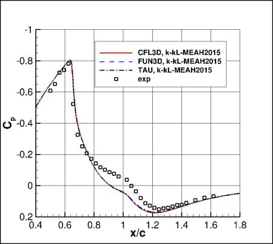
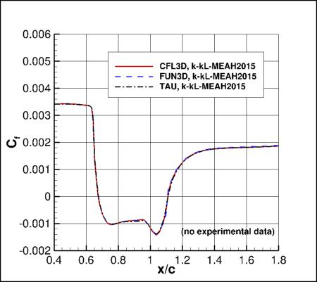
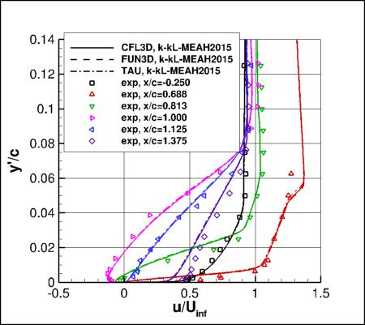
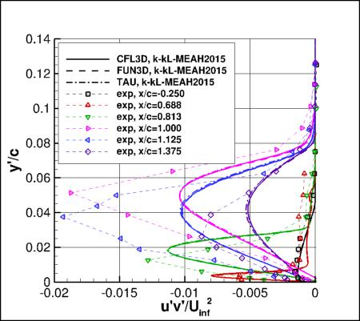

Public Access (formerly Langley Research Center)Turbulence Modeling Resource |
Jump to: SA Results, SA-RC Results, SSTm Results, SST-2003m Results, SST-RCm Results, BSLm Results, SSG/LRR-RSM-w2012 Results, Wilcox2006-klim-m Results
Return to: Axisymmetric Transonic Bump Validation Intro Page
Return to: Turbulence Modeling Resource Home Page
Axisymmetric Transonic Bump Validation Case
K-kL-MEAH2015m Model Results
Link to K-kL-MEAH2015m equations




Previously on this page the results were reported as k-kL-MEAH2015 solutions, but more properly they should be referred
to as k-kL-MEAH2015m. Essentially no difference is expected.
Note that thorough
grid studies were not performed for validation cases such as this one.
Some effort was made to ensure reasonable grid resolutions, but there may still be
small noticeable discretization errors. Therefore, these validation results shown should be considered
representative, but not "truth."
The plots compare the k-kL-MEAH2015m results from CFL3D,
FUN3D, and TAU with experimental data.
The CFD codes predict the flow separation to occur at x/c = 0.68 and reattachment at x/c = 1.11
(in experiment these were 0.7 and 1.1, respectively).
Both CFL3D and FUN3D used freestream turbulence intensity=0.0089% and freestream turbulent viscosity (relative to laminar)=0.009
(additional details can be found in the CFL3D User's Manual, Appendix H), while TAU used freestream turbulence intensity=0.1% and freestream turbulent viscosity (relative to laminar)=0.1.
Please read note 5 on Notes on running CFD page.
These results are from the second-finest grid (721x321).
The data files from CFL3D are given here:
axibump_cfl3d_cp_kklmeah2015.dat,
axibump_cfl3d_cf_kklmeah2015.dat,
axibump_cfl3d_u_kklmeah2015.dat,
axibump_cfl3d_uv_kklmeah2015.dat.
(Note: the profiles have been interpolated using Tecplot software onto pre-set points, that may or may
not correspond to the actual grid points or grid cells used in the computation.)
A typical CFL3D input file is:
axibump_cfl3d_typical_kklmeah2015.inp.
A typical FUN3D input file is:
fun3d.nml_typical_kkl_2.
As for other two-equation model cases posted on the TMR website, the
In this case CFL3D
was run on a version of the 3-D grid that was centered around the x-z plane, rather
than on the posted grid that has one plane aligned with the x-z
plane (1 deg. still separated the two planes).
Jump to: SA Results,
SA-RC Results,
SSTm Results,
SST-2003m Results,
SST-RCm Results,
BSLm Results,
SSG/LRR-RSM-w2012 Results,
Wilcox2006-klim-m Results Return to: Axisymmetric Transonic Bump Validation Intro Page Return to: Turbulence Modeling Resource Home Page
Recent significant updates:
 term in the turbulence production was ignored (often the default for codes whose predominant applications are low-speed
or transonic cases; see notes 4 and 7 on the Notes on Running the Cases with CFD page).
This approximation makes only a very small difference in results for this case, as demonstrated on
the BSLm model results page.
term in the turbulence production was ignored (often the default for codes whose predominant applications are low-speed
or transonic cases; see notes 4 and 7 on the Notes on Running the Cases with CFD page).
This approximation makes only a very small difference in results for this case, as demonstrated on
the BSLm model results page.
01/28/2019 - mentioned that CFL3D version of grid is centered about x-z plane
02/02/2018 - added TAU results
01/13/2016 - added link to SA-RC results
Page Curators: Christopher Rumsey,
Ethan Vogel,
Clark Pederson
Last Updated: 03/06/2025